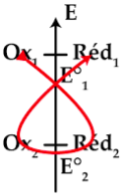

Rappel
Généralités
1 - Concentration molaire et massique
La concentration molaire
La concentration molaire d'une espèce en solution, notée C, représente la quantité de matière (n) contenue dans un litre de solution. Son unité de mesure est le mol/L. La formule de la concentration molaire est la suivante:
- n : quantité de matière en mole
- C : concentration molaire en mol/L
- Vsolution : volume de la solution en L.
À partir de la concentration molaire, il est possible de déterminer la quantité de matière:
\[ n = C \cdot V_{\text{solution}} \]La concentration massique
La concentration massique représente la quantité de masse présente dans un litre de solution.
m : masse en g
Lien entre les deux concentrations
\[ C = \frac{C_m}{M} \]M : masse molaire g/mol
2 - La masse volumique et la densité
La masse volumique
La masse volumique est la masse occupée par 1 litre d'une substance chimique. Elle se note ρ et est définie comme le rapport entre la masse m d'un échantillon de cette substance et le volume V qu'il occupe:
La masse volumique peut être exprimée en kg/m3, g/L, g/cm3, ou g/ml. Par exemple, la masse volumique de l'eau est de 1g/ml = 1g/cm3 = 1000g/L = 1000kg/m3.
La densité
La densité, pour les solides ou les liquides, est le rapport entre la masse volumique de la substance chimique considérée et celle de l'eau.
\[ d = \frac{\rho}{\rho_{\text{eau}}} \]Exemple : Densité de l'eau = 1.0. Densité de l'éthanol = 0.79
Pour les gaz, la densité est le rapport de la masse molaire du gaz sur celle de l'air (\(M_{\text{air}} = 28.96 \, \text{g/mol}\)).
\[ d_{\text{gaz}} = \frac{M_{\text{gaz}}}{M_{\text{air}}} \]À partir de la masse volumique ou de la densité d'une substance chimique, il est possible de déterminer la masse d'un échantillon connaissant le volume utilisé.
\[ m = \text{substance chimique} \times V \] \[ m = \rho_{\text{substance}} \times V \] \[ m = d_{\text{substance}} \times \rho_{\text{eau}} \times V \]2 Préparation d'une solution
Préparation d'une solution par dissolution
Lors d'une dissolution, le soluté est dissous dans le solvant pour obtenir la solution désirée. Pour préparer une solution à une concentration spécifique, il est nécessaire de connaître le volume de la solution à préparer et la quantité de soluté requise.
Par dilution
La dilution consiste à ajouter du solvant à une solution pour réduire sa concentration. Pour préparer une solution diluée, il faut d'abord déterminer la quantité de la solution initiale à utiliser, en connaissant les concentrations initiales et finales ainsi que le volume final de la nouvelle solution.
Loi de dilution:
\[ n_i = n_f \] \[ C_iV_i = C_fV_f \]A partir d'une solution commerciale
Pour préparer un volume V d'une solution de composé X à la concentration C en diluant un volume V0 d'une solution commerciale de X, les indications sur l'étiquette du bidon contenant la solution commerciale sont la densité d de la solution et le pourcentage en masse p du produit X.
La concentration d'une solution commerciale:
\[ C_0 = \frac{pd\rho_{\text{eau}}}{100M_x} \]- C0 : concentration initiale de la solution commerciale
- p : pourcentage en masse de X
- d : densité de X
- Mx : masse molaire de X
Le volume V0 à prélever de la solution commerciale suit la loi de dilution:
\[ C_0V_0 = CV \]3 - Évolution d'une transformation chimique
1 - Évolution des quantités des matières
Au cours d'une transformation chimique :
- Des réactifs sont consommés, leur quantité de matière diminue.
- Des produits sont formés, leur quantité de matière augmente.
2 - Les nombres stœchiométriques
Une équation bilan traduit les proportions dans lesquelles les réactifs réagissent et les produits se forment.
Les nombres stœchiométriques sont les coefficients ajustant l'équation bilan pour que le nombre de chaque élément soit identique des deux côtés de l'équation.
3 - L'avancement d'une réaction
L'avancement (\(x\)) en mole (mol) suit la réaction. Il représente la quantité de matière consommée pour un réactif dont le coefficient stœchiométrique est 1.
L'avancement est nul au début et atteint sa valeur finale lorsque la réaction est terminée.
4 - Le tableau d'avancement
Le tableau d'avancement permet de suivre l'évolution d'un système chimique.
Il est de la forme :
\[ \alpha A + \beta B \rightarrow \sigma C + \gamma D \] \(\alpha\), \(\beta\), \(\sigma\), \(\gamma\) : coefficients stœchiométriques.
L'avancement \(x\) :
\[ x = \frac {n_0(A) - n_r(A)}{\alpha} = \frac {n_0(B) - n_r(B)}{\beta} = \frac {n(C)}{\sigma} = \frac {n(D)}{\gamma} \]
Détermination de la composition finale du système :
Le réactif limitant est celui épuisé en premier. Pour l'identifier, on résout les équations pour les réactifs (A, B) :
\[n_0(A) - \alpha X_{max} = 0 \]
\[n_0(B) - \beta X_{max} = 0 \]
On retient la plus petite de ces deux valeurs pour compléter la dernière ligne du tableau.
5 - Les proportions stœchiométriques
Une réaction dans les proportions stœchiométriques signifie que les réactifs s'épuisent simultanément, sans réactif limitant particulier. Ces proportions dépendent des coefficients stœchiométriques dans l'équation bilan.
6 - Les réactions limitées
Définition
Une réaction limitée (ou équilibrée) n'est pas totale.
L'avancement final \(X_f\) ne atteint pas l'avancement maximal \(X_{max}\) déterminé par le tableau d'avancement.
Constant d'équilibre
\[ \alpha A + \beta B \rightarrow \sigma C + \gamma D \]
\[ K = \frac {n_{A}^{\alpha}n_{B}^{\beta}}{n_C^{\sigma}n_D^{\gamma}} \]4 Oxydoréduction
Les oxydants et les réducteurs
Les oxydants sont des espèces chimiques capables de capter des électrons, tandis que les réducteurs sont des espèces chimiques capables d'en céder. Par exemple, le cuivre (II) Cu2+ est un oxydant car il peut se transformer en cuivre métallique Cu en gagnant deux électrons. Le zinc est un réducteur car il peut se transformer en Zn2+ en perdant deux électrons.
Les couples redox
Un couple redox est composé d'un oxydant et d'un réducteur liés par un transfert d'électrons, illustré par une demi-équation électronique. Le couple est généralement noté ainsi:
\[ \text{Oxydant/Réducteur} \]Exemple : Cu2+/Cu Demi-équation
\[ Cu^{2+} + 2e^- \longrightarrow Cu \]L'équation bilan
La réaction d'oxydoréduction, ou équation bilan, est une réaction où se produit un échange d'électrons entre l'oxydant d'un couple et le réducteur d'un autre couple.
Pour deux couples : \( Ox_1 / Red_1 \) et \( Ox_2/Red_2 \)

On utilise la règle du gamma pour obtenir l'équation bilan. On suppose le couple \( \text{ox1/red1} \) avec le potentiel le plus élevé.
\[ Ox_1 + Red_2 \longrightarrow Ox_2 + Red_1 \]Les dosages d'oxydoréduction
Les dosages d'oxydoréduction, aussi appelés dosages rédox, servent à déterminer la concentration, dans une solution, d'une espèce ayant des propriétés oxydantes ou réductrices. Comme pour tous les dosages, il est nécessaire de déterminer le point d'équivalence (lorsque les réactifs ont été mélangés dans les proportions stœchiométriques).